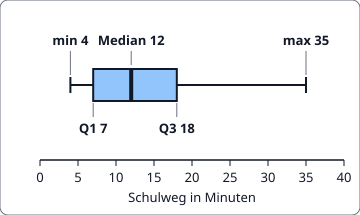

Boxplot – zwei Klassen im Vergleich
Mit einem KI-Tutor lernen
Ein KI-Tutor erklärt dir diese Seite und hilft dir bei den Aufgaben. Wähl deinen Assistenten:
Mit Claude öffnen Mit ChatGPT öffnen Mit Mistral Vibe öffnen
Du nutzt dein eigenes Konto beim Anbieter. Der Assistent ist kein Angebot von lernapps.net: lernapps liefert nur Inhalte und Aufgaben. Die Wahl gilt für alle Seiten, nur auf diesem Gerät.
Zwei Klassen auf einen Blick
Die 8b und die 8c wollen ihre Schulwege vergleichen, aber zwei Listen mit Zahlen sind schwer zu vergleichen. Noah aus der 8b zeichnet deshalb für beide Klassen ein Bild aus den Werten, die du auf der Seite davor bestimmt hast, auf derselben Skala. Ein solches Bild heißt Boxplot. Eine Linie reicht vom kleinsten bis zum größten Wert, dazwischen liegt eine Box von Q1 bis Q3, und ein dicker Strich in der Box zeigt den Median. Nach dieser Seite kannst du einen Boxplot zeichnen und aus Boxplots Aussagen über die Daten ablesen.
 © CC-BY-4.0
© CC-BY-4.0Beide Bilder haben dieselbe Skala. Vergleiche, wie weit die Linien und die Boxen reichen.
Aufgabe
Lösung
Beide gleich
Die Linien enden an verschiedenen Stellen der Skala. Die der 8b ist viel länger.
Die 8b richtige Antwort
Die Linie der 8b beginnt links bei 4 und endet rechts bei 35. Sie ist viel länger.
Die 8c
Die Linie der 8c reicht nur von 6 bis 19 und ist kürzer.
Die ganze Linie vom linken bis zum rechten Ende ist die Spannweite. Bei der 8b ist sie größer.
Wie ein Boxplot gebaut ist
Wenn du Mitte und Streuung von zwei Klassen auf einen Blick vergleichen willst, brauchst du ein Bild, das die fünf Kennwerte zeigt: den Boxplot. Ein Boxplot zeichnet fünf Werte der geordneten Daten auf einer Skala: den kleinsten Wert, Q1, den Median, Q3 und den größten Wert. Die Box reicht von Q1 bis Q3. Der dicke Strich in der Box steht beim Median. Eine Linie führt von der Box zum kleinsten Wert, eine zum größten. Die fünf Werte teilen die geordneten Daten in vier Viertel mit etwa gleich vielen Werten: von min bis Q1, von Q1 bis zum Median, vom Median bis Q3 und von Q3 bis max.
- Boxplot
Ein Boxplot ist ein Bild für fünf Werte der geordneten Daten, den kleinsten Wert, Q1, den Median, Q3 und den größten Wert. Die Box reicht von Q1 bis Q3, ein dicker Strich in der Box steht beim Median.

© CC-BY-4.0Die beschrifteten Stellen sind die fünf Werte der 8b von der Seite davor. „min“ ist der kleinste Wert, „max“ der größte.
Merke
In der Box liegen die mittleren zwei Viertel der Werte, also etwa die Hälfte. Ist die Box oder eine Linie lang, heißt das nicht, dass dort mehr Werte liegen: Jedes Viertel hat etwa gleich viele Werte. Es heißt, dass die Werte dort weiter streuen.
Einen Boxplot Schritt für Schritt zeichnen
Damit zwei Klassen vergleichbar werden, zeichnest du beide Boxplots auf derselben Skala. So entsteht der Boxplot der 8c:
Die 8c als Boxplot
- Fünf Werte aus den geordneten Daten bestimmen: kleinster Wert 6, Q1 = 9,5, Median 12,5, Q3 = 15,5, größter Wert 19.
- Eine Skala zeichnen, die von 0 bis 40 reicht, und die fünf Werte darauf markieren.
- Die Box von 9,5 bis 15,5 zeichnen und den dicken Strich bei 12,5.
- Eine Linie von der Box bis 6 und eine bis 19 zeichnen.
Übung
Aufgabe
Lösung
Am Boxplot sieht man, wie viele Kinder die 8c hat
Ein Boxplot zeigt nicht, wie viele Werte es gibt, sondern wie sie verteilt sind. Die Anzahl kann man an ihm nicht ablesen.
In der 8c braucht ein Kind 35 Minuten
Das gilt für die 8b. Die Linie der 8c endet schon bei 19.
In der 8c liegen die mittleren Werte enger beieinander als in der 8b richtige Antwort
Die Box der 8c ist kürzer. Die mittlere Hälfte der Werte liegt dort in einem kleineren Bereich.
Die Länge der Box zeigt, wie weit die mittlere Hälfte der Werte streut. Die 8c streut weniger.
Aufgabe
Lösung
Richtige Antwort: 12,5 Minuten (erlaubte Abweichung: 1 Minuten)
Der dicke Strich der 8c steht zwischen 12 und 13, genau bei 12,5 Minuten.
Aufgabe
Drei Beispielaufgaben, jede mit ihrer Lösung:
Aufgabe Nr. 1
Ein Boxplot hat diese fünf Werte: kleinster Wert 2, Q1 = 10, Median 18, Q3 = 25, größter Wert 29. Wie lang ist die Box auf der Skala? Die Box reicht von Q1 bis Q3.
Tipp
Die Länge ist der Abstand zwischen der linken und der rechten Kante der Box.
Lösung
- Die linke Kante der Box ist Q1 = 10, die rechte Kante ist Q3 = 25.
- Die Länge ist der Unterschied: 25 − 10 = 15.
Richtige Antwort: 15
Aufgabe Nr. 2
Ein Boxplot hat diese fünf Werte: kleinster Wert 8, Q1 = 14, Median 20, Q3 = 24, größter Wert 40. Wie lang ist die Box auf der Skala? Die Box reicht von Q1 bis Q3.
Tipp
Die Länge ist der Abstand zwischen der linken und der rechten Kante der Box.
Lösung
- Die linke Kante der Box ist Q1 = 14, die rechte Kante ist Q3 = 24.
- Die Länge ist der Unterschied: 24 − 14 = 10.
Richtige Antwort: 10
Aufgabe Nr. 3
Ein Boxplot hat diese fünf Werte: kleinster Wert 2, Q1 = 12, Median 16, Q3 = 26, größter Wert 39. Wie lang ist die Box auf der Skala? Die Box reicht von Q1 bis Q3.
Tipp
Die Länge ist der Abstand zwischen der linken und der rechten Kante der Box.
Lösung
- Die linke Kante der Box ist Q1 = 12, die rechte Kante ist Q3 = 26.
- Die Länge ist der Unterschied: 26 − 12 = 14.
Richtige Antwort: 14
Aufgabe
Drei Beispielaufgaben, jede mit ihrer Lösung:
Aufgabe Nr. 1
In einer Klasse haben 12 Kinder ihren Schulweg angegeben. Die Daten sind geordnet und in vier gleich große Viertel geteilt. Die Box reicht über die mittleren zwei Viertel. Wie viele Werte liegen in der Box?
Tipp
Wie viele Werte hat ein Viertel? Die Box umfasst zwei Viertel.
Lösung
- Ein Viertel der 12 Werte ist 12 : 4.
- Die Box umfasst zwei Viertel, also die Hälfte: 6 Werte.
Richtige Antwort: 6
Aufgabe Nr. 2
In einer Klasse haben 16 Kinder ihren Schulweg angegeben. Die Daten sind geordnet und in vier gleich große Viertel geteilt. Die Box reicht über die mittleren zwei Viertel. Wie viele Werte liegen in der Box?
Tipp
Wie viele Werte hat ein Viertel? Die Box umfasst zwei Viertel.
Lösung
- Ein Viertel der 16 Werte ist 16 : 4.
- Die Box umfasst zwei Viertel, also die Hälfte: 8 Werte.
Richtige Antwort: 8
Aufgabe Nr. 3
In einer Klasse haben 28 Kinder ihren Schulweg angegeben. Die Daten sind geordnet und in vier gleich große Viertel geteilt. Die Box reicht über die mittleren zwei Viertel. Wie viele Werte liegen in der Box?
Tipp
Wie viele Werte hat ein Viertel? Die Box umfasst zwei Viertel.
Lösung
- Ein Viertel der 28 Werte ist 28 : 4.
- Die Box umfasst zwei Viertel, also die Hälfte: 14 Werte.
Richtige Antwort: 14
Aufgabe
Lösung
Richtige Antwort: Linkes Ende der Linie – 3; Linke Kante der Box (Q1) – 5,5; Dicker Strich in der Box (Median) – 9; Rechte Kante der Box (Q3) – 13,5; Rechtes Ende der Linie – 20
Bei neun Werten ist der fünfte der Median (9). Die untere Hälfte 3, 5, 6, 8 hat die Mitte 5,5, die obere Hälfte 11, 13, 14, 20 hat die Mitte 13,5. Kleinster und größter Wert sind 3 und 20.
Aufgabe
Lösung
Richtige Antwort: 1. Die Daten der Größe nach ordnen, 2. Kleinsten Wert, Q1, Median, Q3 und größten Wert bestimmen und auf einer Skala markieren, 3. Die Box von Q1 bis Q3 mit dem Strich beim Median und die zwei Linien zum kleinsten und größten Wert zeichnen
Erst brauchst du die fünf Werte, dann die Skala. Die Zeichnung folgt zuletzt, denn sie braucht beide.
Aufgabe
Lösung
Richtige Antwort: Die Aussage stimmt nicht.
Jedes Viertel der Werte hat etwa gleich viele Werte. Eine längere Linie bedeutet nur, dass diese Werte weiter auseinanderliegen.
Rückblick auf Kapitel 2
Du hast die Schulwege der 8b und 8c verglichen. Du kannst jetzt:
- Daten ordnen, den Median, die Spannweite und die Quartile bestimmen,
- einen Boxplot aus den fünf Werten zeichnen,
- an Boxplots ablesen, wie zwei Klassen sich unterscheiden.
Im nächsten Kapitel fragt die Schule, ob die Antworten einer Klasse für alle gelten.
Fehler gefunden oder eine Idee für diese App?